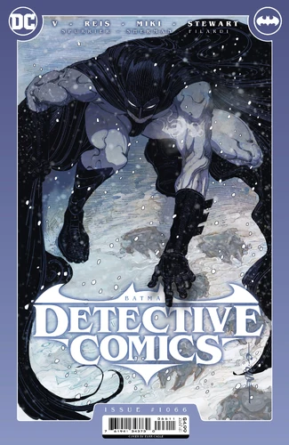
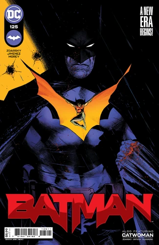
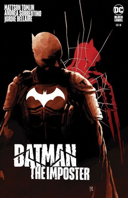
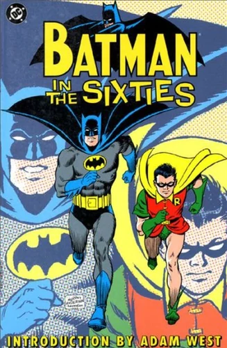
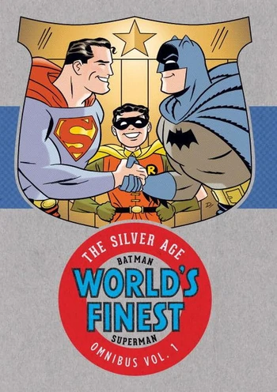
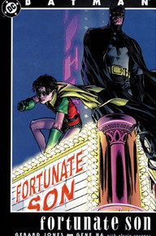

The Dark Knight
Private Information Page Of The most Iconic Hero
Latest Comics
Detective Comics (2016-) #1066

Batman (2016-) #125

Batman: The Imposter

Batman in the Sixties

Batman & Superman World's Finest

Batman: Fortunate Son
